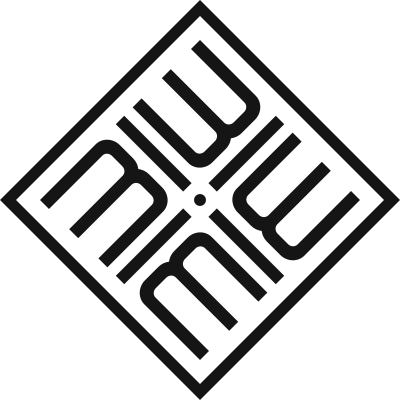

Miebaka
Joshua.
I question things.
Then I give them form.
Selected work
Inquisitive by nature.
Deliberate by design.
I’m Miebaka. For seven years, I’ve helped brands find their voice and hold their shape, from fintech to food and culture. Most recently, I’ve been designing in-house at Rise.
I look for the idea underneath before I start shaping the form. Outside the work: snakes, games, and a surprisingly strong opinion about how water tastes.
A little more about me